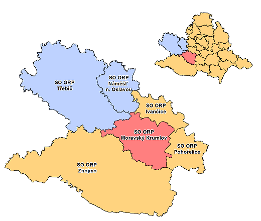

Správní obvod obce s rozšířenou působností (dále jen SO ORP) Moravský Krumlov je jedním z 21 správních obvodů
v Jihomoravském kraji. Se svými 22 452 obyvateli (stav k 31.12.2019) se rozkládá na ploše 348 km2 a zahrnuje
33 obcí.[8]
1.1. Poloha

V rámci Jihomoravského kraje je SO ORP Moravský Krumlov situováno v jihozápadní části území. Na severozápadě území
sousedí s
SO ORP Třebíč a SO ORP Náměšť nad Oslavou v kraji Vysočina. V Jihomoravském kraji sousedí na jihu s SO ORP Znojmo,
na východně s SO ORP Pohořelice a severovýchodě s SO ORP Ivančice.[19]
1.2. Geomorfologie, geologie a půdy
Z geomorfologického hlediska náleží území do Alpsko-himalájského systému. Geomorfologické provincie zasahující na
území SO ORP jsou Západní Karpaty v jihovýchodní části a Česká vysočina v severozápadní části. Dále pak geomorfologické
subprovincie Vněkarpatská sníženina, Českomoravská vrchovina a ze severovýchodu Brněnská vrchovina. Většina území
SO ORP Moravský Krumlov se nachází v Jevišovické pahorkatině a Dyjsko-svrateckém úvalu. Zasahuje sem i výběžek
Boskovické brázdy a Bobravské vrchoviny.[20]
Z geologického hlediska se v SO ORP vyskytují kvartérní horniny (hlíny, spraše, písky, štěrky), tercierní horniny
(písky, jíly), granitoidy assyntské (žuly, granodiority), granodiority až diority (tonalitová řada), proterozoické
horniny assyntsky zvrásněné, s různě silným variským přepracováním (břidlice, fylity, svory až pararuly), ortoruly,
granulity a velmi pokročilé migmatity v moldanubiku a proterozoiku, dále jednotvárná série moldanubika (svorové ruly,
pararuly až migmatity), permokarbonské horniny (pískovce, slepence, jílovce), mezozoické horniny alpinsky zvrásněné
(pískovce, břidlice).[20]
V SO ORP převažují dva půdní druhy, a to půdy převážně hlinité a půdy převážně hlinitopísčité až písčitohlinité. Z
půdních typů se jedná o hnědozemě, kambizemě, fluvizemě, černozemě a luvizemě. Z hlediska využití ploch jsou zde hlavně
zemědělské půdy a lesní pozemky a malou část zaujímají zastavěné plochy.[20]
1.3. Vodstvo a podnebí
Z větších toků oblastí protéká řeka Rokytná, dále jsou zde menší potoky, například Rešický potok, Tulešický potok,
Dolnodubňanský potok, Dobřínský potok, Lázeňský potok, Miroslavka nebo Skalička. Můžeme najít i menší vodní plochy jako
například Dolnodubňanská nádrž, Týnský rybník nebo Miroslavský rybník.[20]
Dle členění klimatických oblastí (Quitt, E. 1971) spadá území SO ORP Moravský Krumlov do mírně teplé oblasti MT11 a dvou
teplých oblastí T2, T4. Do mírně teplé oblasti MT11 spadá zhruba polovina území správního obvodu v jeho severozápadní
části. Teplá oblast T2 zaujímá jeho střed a teplá oblast T4 tvoří menší oblast zasahující z jihovýchodu. Charakteristika
oblasti MT11 se vyznačuje dlouhým teplým a suchým létem, krátkým přechodným obdobím s mírně teplým jarem a podzimem,
zima je krátká, mírně teplá a velmi suchá s krátkým trváním sněhové pokrývky. Oblast T2 má dlouhé, teplé a suché léto,
velmi krátké přechodné období s teplým až mírně teplým jarem i podzimem, krátkou, mírně teplou a suchou až velmi suchou
zimou s velmi krátkým trváním sněhové pokrývky. Pro oblast T4 je typické velmi dlouhé léto, které je velmi teplé a velmi
suché. Přechodné období je velmi krátké s teplým jarem a podzimem. Zima je krátká, teplá a suchá až velmi suchá s velmi
krátkým trváním sněhové pokrývky.[8]
1.4. Chráněná území
V SO ORP Moravský Krumlov se nachází maloplošně chráněná území, mezi které patří národní přírodní památka (NPP), národní přírodní
rezervace (NPR), přírodní památka (PP) a přírodní rezervace (PR). Dále se v území nachází mnoho Evropsky významných
lokalit a památné stromy. Mezi známá chráněná území patří NPP Miroslavské kopce, NPR Krumlovsko-rokytenské slepence, PP Řeka Rokytná a PR Na Kocourkách.[3]
Maloplošně chráněná území, Evropsky významné lokality a památné stromy[3]
| Kategorie | Název |
| Národní přírodní památka | Miroslavské kopce |
| Národní přírodní rezervace | Krumlovsko-rokytenské slepence |
| Přírodní památka | Bílá skála u Jamolic |
| Černice |
| Oleksovická mokřina |
| Stříbrný vrch |
| Šidlovy skalky |
| Široký |
| Štěpánovský lom |
| U kapličky |
| U Michálka |
| Ve Žlebě |
| Přírodní rezervace | Na Kocourkách |
| Pod Havranem |
| Templštejn |
| Evropsky významná lokalita | Krumlovsko-rokytenské slepence |
| Krumlovský les |
| Miroslavské kopce |
| Na Kocourkách |
| Oleksovická mokřina |
| Rakšické louky |
| Řeka Rokytná |
| Široký |
| Štěpánovský lom |
| Tavíkovice - zámek |
| U kapličky |
| U Michálka |
| Údolí Jihlavy |
| Velký kopec |
| Ve Žlebě |
| Památné stromy | Duby u Pustého zámku |
| Duby v podzámčí |
| Dvojice červených buků v zámeckém parku Miroslavské Knínice |
| Hubertův dub |
| Skalický platan |
1.4.1. NPP Miroslavské kopce
NPP Miroslavské kopce se nachází jižně od města Miroslav a má rozlohu 30,84 ha. Území
je chráněno od 15. 8. 2004. Předmětem ochrany jsou vzácné zbytky druhově bohatých rostlinných a živočišných společenstev
skal a stepních trávníků na slepencovém podkladě v nejjižnějším cípu Bobravské vrchoviny.[1]
1.4.2. NPR Krumlovsko-rokytenské slepence
NPR Krumlovsko-rokytenské slepence se nachází
severovýchodně od města Moravský Krumlov a má rozlohu 86,58 ha. Území je chráněno od 1. 6. 2005. Předmět ochrany tvoří
přírodovědecky nejhodnotnější část
geomorfologicky a mikroklimaticky mimořádně členitého území údolí Rokytné, zahloubeného v permských slepencích na
jihovýchodním okraji Boskovické brázdy, s výskytem unikátních druhově mimořádně bohatých rostlinných a živočišných
společenstev skal, lesostepí, lesů a vodního toku, zahrnující řadu vzácných a ohrožených druhů rostlin a živočichů.[2]
1.4.3. PP Řeka Rokytná
Přírodní park Rokytná se rozprostírá po obou březích řeky Rokytné a říčky Rouchovanky na území okresu Třebíč a Znojmo.
Celková rozloha je 5320 ha. Území je součástí Jevišovické pahorkatiny s plochou nivou, skalnatými břehy a listnatými
háji porůstající údolí a rokliny. Vyskytují se zde vzácné a chráněné byliny a živočichové, jako např. brambořík nachový, dymnivka plná, stulík žlutý,
česnek medvědí, sněženka předjarní, kyčelnice cibulkonosná, žluna zelená, skorec vodní, strakapoud prostřední, ledňáček
říční, rak říční nebo užovka podplamatá.[12]
1.4.4. PR Na Kocourkách
Přírodní rezervace Na Kocourkách se nachází u obce Vémyslice. Rozloha rezervace je 3 ha a jako chráněná byla vyhlášena 3. 11. 1949.
Předmětem ochrany jsou teplomilná rostlinná společenstva se zastoupením řady vzácných a ohrožených druhů rostlin a živočichů. Z rostlin se zde
vyskytují např. kosatec písečný, koniklec velkokvětý a luční, divizna brunátná, pryskyřník illyrský, zlatovlásek obecný,
z živočichů kudlanka nábožná, ještěrka obecná, pěnice vlašská. Na králičí nory je vázán vzácný listorohý brouk Trox
eversmanni či střevlík Pristonichus terricola.[4]
SO ORP Moravský Krumlov tvoří celkem 33 obcí, z toho jsou dvě města Moravský Krumlov a Miroslav a dva městysy
Olbramovice a Vémyslice. Celkový počet obyvatel byl 22 452 k 31. 12. 2019.
Nejstaršími obcemi jsou obec Dolenice, která
je poprvé zmíněna již v roce 1046, obec Dobřínsko, jehož první
písemná zmínka pochází z roku 1131 a obce Hostěradice a Lesonice, jejichž první písemná zmínka se dochovala z roku 1190.
Naopak nejmladší obcí je obec Trnové Pole. První písemná zmínka o obci
pochází z roku 1785. Původně vesnice ležela o několik set metrů východněji směrem k obci Vlasatice, avšak za
Napoleonského tažení
vesnici postihla morová rána, která vyhladila skoro celé původní německé obyvatelstvo, zbytek přeživších založil nové
Trnové Pole na místě, kde leží dnes.[7]
Založení města Moravský Krumlov bylo úzce spjato se stavbou kamenného hradu typu tzv. italského kastelu zahájené
pravděpodobně na pokyn českého krále Přemysla Otakara II. První písemná
zmínka o existenci města je z roku 1289, kdy byl krumlovský hrad a město s největší pravděpodobností v držení pánů z
Obřan. Moravský Krumlov byl povýšen na město snad již v roce 1260 Přemyslem Otakarem II.[7]
Miroslav je písemně doložena od roku 1222, kdy český král Přemysl Otakar I. a jeho manželka Konstancie potvrdili
písemnou listinou věnování vinného desátku rajhradským benediktinům. V roce 1533 povýšil
Ferdinand I. Miroslav na městečko. Žádosti o povýšení na město pocházejí sice již z let 1929 a 1930, došlo k němu však v
roce 1965.[15]
Současné Olbramovice vznikly v roce 1947 sloučením čtyř obcí. Původní Olbramovice bývaly městečkem a první zmínka o
Olbramovicích je z roku 1253. K povýšení na městečko došlo možná již kolem roku 1420,
písemně je statut městečka doložený až k roku 1436. V roce 2007 byl Olbramovicím navrácen status městys. Vémyslice jsou
poprvé zmíněny v listině z roku 1234. V roce 1556 byly Vémyslice zásluhou tišnovské abatyše Barbory Konické ze Švábenic
povýšeny na městečko,
ale i před povýšením měli některá neobvyklá privilegia. Vémysličtí byli od pradávna osvobozeni od roboty, ale zato měli
povinnost konat hlásku, tedy strážit tišnovský klášter. Od
své vrchnosti obdrželi také právo odúmrtí. Listinou z roku 1335 měly Vémyslice právo vařit a prodávat pivo. Od
1. 12. 2006 získala obec zpět titul městys.[7]
Doprava v SO ORP Moravský Krumlov tvoří součást Integrovaného dopravního systému Jihomoravského kraje (IDS JMK). Autobusovou dopravu zajišťují
dopravci ADOSA a.s., BDS-BUS, s.r.o., Břežanská dopravní společnost, s.r.o., ČSAD Hodonín a.s a Znojemská dopravní společnost – PSOTA,
s.r.o. Autobusy zajišťují spojení mezi Moravským Krumlovem a městy Znojmo a Ivančice. Jezdí zde i speciální autobusy zajišťující přepravu zaměstnanců JE Dukovany hlavně na trase
mezi Moravským Krumlovem a JE Dukovany. Lidé využívají kromě autobusové dopravy také vlaky společnosti České dráhy, a.s.[10]
Linky autobusové a železniční dopravy[10]
| Číslo linky | Dopravce | Obce |
| 104 | ČSAD Hodonín, ZDS PSOTA, BDS-BUS | Brno, ÚAN Zvonařka - Pohořelice - Vlasatice - Hrušovany nad Jevišovkou - Hevlín - Laa an der Thaya (AT) |
| 108 | BDS-BUS, ZDS PSOTA, ČSAD Hodonín, ADOSA | Brno, ÚAN Zvonařka - Modřice - Pohořelice - Miroslav - Lechovice - Znojmo |
| 158 | BDS-BUS, ČSAD Hodonín | Tavíkovice - Višňové - Hostěradice - Miroslav - Jiřice u Miroslavi - Břežany - Hrušovany nad Jevišovkou |
| 164 | ZDS PSOTA, ČSAD Hodonín, ADOSA | Pohořelice - Loděnice - Olbramovice - Moravský Krumlov |
| 432 | ČSAD Hodonín, BDS-BUS, ADOSA | Ivančice – Moravský Krumlov – Hostěradice – Prosiměřice – Znojmo |
| 440 | BDS-BUS, ADOSA | Moravský Krumlov: Železniční stanice - Náměstí - Rakšice |
| 441 | ADOSA, ČSAD Hodonín | Moravský Krumlov - Jamolice - Dukovany - Hrotovice |
| 442 | ČSAD Hodonín | Moravský Krumlov - Dolní Dubňany - Rouchovany - Hrotovice |
| 443 | ADOSA, ČSAD Hodonín | Moravský Krumlov - Vémyslice - Tulešice - Horní Kounice - Tavíkovice |
| 444 | ČSAD Hodonín | Moravský Krumlov - Vémyslice - Trstěnice - Višňové |
| 445 | ADOSA, BDS-BUS, ČSAD Hodonín | Moravský Krumlov - Lesonice - (Kadov - ) Miroslav |
| 446 | ZDS PSOTA, ČSAD Hodonín | Moravský Krumlov - Loděnice |
| 450 | BDS-BUS, ČSAD Hodonín | Miroslav - Olbramovice - Branišovice - Jiřice u Miroslavi |
| 513 | ADOSA | Jezeřany-Maršovice - Němčičky - Modřice |
| 810 | ADOSA, ČSAD Hodonín, BDS-BUS | Znojmo - Oleksovice - Hostěradice - Miroslav |
| 811 | ADOSA, ČSAD Hodonín, BDS-BUS | Znojmo - Višňové - Trstěnice |
| 812 | ADOSA, ZDS-Psota | Znojmo - Plaveč - Běhařovice - Tavíkovice - Rouchovany - Dukovany |
| S41 | České dráhy | Brno - Střelice - Moravské Bránice - Ivančice - Oslavany / - Moravský Krumlov - Miroslav - Hrušovany nad Jevišovkou-Šanov |
Silniční síť tvoří z velké části silnice II. a III. třídy. V území
se nachází dvě významnější komunikace. První komunikace vede z Rouchovan v kraji
Vysočina přes Rešice, Tulešice, Vémyslice, Dobelice, kolem Olbramovic a přes Branišovice,
kde se napojuje na silnici 53, která vede v jednom směru na Pohořelice a ve druhém na Znojmo. Slouží jako
úniková cesta v případě havárie JE Dukovany. Jedná se o silnici II. třídy řady 3xx
s označením 396. Druhá významná komunikace spojuje Moravský Krumlov se Znojmem.
Silnice vede přes Hostěradice. Jedná se o silnici II. třídy řady 4xx s označením 413. Územím prochází také železnice, která v severním směru napojuje SO ORP Moravský Krumlov na Brno a v
jižním směru na Hrušovany nad Jevišovkou. Nevyskytují se zde žádné vysokorychlostní nebo elektrifikované tratě.
Silnice I. a II. třídy[7][9][10]
| Třída silnice | Označení silnice | Obce |
| Silnice I. třídy | I/53 | Znojmo - Pohořelice |
| Silnice II. třídy | II/152 | Jemnice - Moravské Budějovice - Hrotovice - Jamolice - Ivančice - Modřice |
| II/392 | Velké Meziříčí - Mohelno - Dukovany - Tulešice |
| II/396 | Rouchovany - Tulešice - Dobelice - Branišovice - Nová Ves |
| II/397 | Hostěradice - Jaroslavice |
| II/398 | Vémyslice - Trstěnice - Jevišovice - Vranov nad Dyjí |
| II/399 | Košíkov - Náměšť nad Oslavou - Hrotovice - Rouchovany - Tavíkovice - Znojmo |
| II/400 | Zvěrkovice - Přeskače - Višňové - Skalice - Miroslav |
| II/413 | Moravský Krumlov - Dobelice - Hostěradice - Znojmo - Hnanice |
| II/415 | Branišovice - Trnové Pole - Hevlín |
V SO ORP Moravský Krumlov se nachází několik základních škol, např. ZŠ Moravský Krumlov Klášterní a Ivančická, ZŠ Miroslav nebo ZŠ
Vémyslice, v těchto obcích se také nachází mateřské školy. Některé školy v SO ORP navštěvují pouze žáci I. stupně
(1. - 5. třída), např. ZŠ Rybníky. V Moravském Krumlově jsou také dvě střední školy – Gymnázium
Moravský Krumlov a Střední škola dopravy, obchodu a služeb Moravský Krumlov příspěvková organizace.
Téměř v každé obci se nachází kostel nebo kaple, například v Moravském Krumlově je klášter s kostelem sv. Bartoloměje a
kaple sv. Floriána. Dále můžeme v některých obcích najít kapličky, sochy sv. Jana Nepomuckého, kříže, zámky nebo Boží
muka v katastrálním území obcí. Mezi známé památky můžeme zařadit zámek v Moravském Krumlově a zámek v Miroslavi, dále
zříceninu hradu Templštejn nebo Doškovou chalupu v Petrovicích. Na území SO ORP Moravský Krumlov se v jeho jihovýchodní části nachází
několik bunkrů, které byly vybudovány mezi roky 1937-1938 jako součást obranného systému pevností v tehdejším Československu.[14]
Příklady těchto bunkrů, dalších památek a turistických míst jsou znázorněny níže v interaktivní mapě.
5.1. Zámek Moravský Krumlov
V meandru řeky Rokytné vzniká hradiště Rokiten, župní hrad – strážce obchodních
stezek a středisko řemeslnické výroby a obchodu. Po r. 1146 (kdy byl tento hrad zničen a vypálen v boji) byl
postaven hrad nový, kamenný.
Jméno dostal asi podle tvaru řečiště řeky – krumm – křivý, vypouklý. Zakladatelé hradu byli pravděpodobně páni z
Obřan. Páni z Obřan rokem 1312 vymírají a panství předal král Jan Lucemburský do držení pánům z Lipé.
Roku 1368 panství koupili páni z Kravař. Ti přebudovali hrad v honosné středověké sídlo. Byla vystavěna velká hranolová věž a rozšířen
hradní palác. Hrad byl opevněn vodními příkopy z východní a západní strany. Krátce pak drželi hrad a město páni z
Cimburka, aby pak opět panství přešlo do vlastnictví pánů z Lipé (1447). Páni z Lipé dbají na rozkvět města a v 16.
stol. dochází také k přestavbě hradu na renesanční zámek. Hlavní stavební práce proběhly v letech 1557 – 1562 dle návrhu
italského stavitele Leonarda Gara de Bisono. Byla vybudována čtyřboká renesanční stavba s dvorem, na jižní straně se
vypíná hlavní hranolová zámecká věž. Vlastní dvůr byl zdoben na třech stranách (mimo východní) ve třech podlažích
charakteristickými arkádami až do výše 16,5 m. Reliéfní výzdoba na pilířích a kartuších sleduje střídání toskánského,
jónského a korintského slohu dle jednotlivých podlaží. Nad jedním sloupem v prvním poschodí je uvedeno datum dokončení
stavby – rok 1562. Druhé poschodí je zdobeno erby pánů z Lipé a rodů s nimi spřízněných. Byl vystavěn rytířský sál a asi
jako poslední byla přistavěna zámecká kaple. Páni z Lipé zastávali význačné funkce, byli spřízněni s panovnickým rodem
Jiříka z Poděbrad, zvali na své sídlo význačné osobnosti té doby (Theoprast B. Paracelsus). Po bitvě na Bílé hoře však
byli zbaveni majetku a život si zachránil Bertold Bohobud z Lipé jen na přímluvu vlivných osob.
Statky propadly císařské komoře a Ferdinand II. je v roce 1625 prodal Lichtensteinům.
Lichtensteinové se snažili o pozvednutí města udělováním různých práv. Město totiž za 30leté války se Švédy mnoho
utrpělo. Poslední větší úpravy zámku probíhají za Karla Josefa Lichtensteina. Roku 1762 byla zbudována nová zámecká kaple se
čtyřmi oltáři a od roku 1772 zůstává zámku jen jedna věž na jižní straně. Eleonora z Oettingenu se zasloužila o založení anglického parku u zámku.
Po smrti knížete Rudolfa roku 1908 připadl Krumlov jeho příbuznému hraběti Kinskému. Kinští byli posledními majiteli
Moravského Krumlova. Po 2. světové válce byl zámek znárodněn, a protože město bylo poničeno bombardováním, přesunuly se
do něj skoro všechny úřady. Pak zámek užívala armáda, posléze zde sídlily různé podniky až nakonec byl zámek dán k
dispozici železničnímu stavitelství v Brně, které zde vybudovalo internát, učebny a učňovské dílny. Tento stav trval do roku 1991.
V roce 1992 za symbolickou 1,- Kč dostala zámek akciová společnost Zámek, která objekt podrobila stavebně
historickému průzkumu, ten nedokončila a ze zámku s půjčkami od bank odešla. V roce 2004 byl zámek prodán v dražbě a
jeho majitelem byla Incheba Bratislava. Od roku 2016 je ve vlastnictví města.[16]
Zásluhou občanů Moravského Krumlova byla
v 50. letech 20. století do krumlovského zámku převezena monumentální obrazová plátna
Alfonse Muchy Slovanská epopej a z prostředků města postupně restaurována. Město
Moravský Krumlov se tímto krokem stalo vlastně zachráncem jedné ze světových perel
malířského umění a nebýt tohoto počinu, s velkou pravděpodobností by Slovanskou epopej
nemohly obdivovat tisíce návštěvníků z naší země a mnoha koutů světa. Na podzim v roce 2011
nechala Galerie hl. města Prahy plátna odvézt do Prahy. Město Moravský Krumlov i celý region
tak přišlo o nejvýznamnější turistický magnet s nepříznivým dopadem v mnoha oblastech,
zejména v cestovním ruchu. V současné době jedná starosta města o zapůjčení Slovanské
epopeje zpět do Moravského Krumlova.[17]
5.2. Zámek Miroslav
První písemná zmínka o miroslavské vodní tvrzi je z roku 1387. Nejstarší částí zámku jsou základy střední
věžovité stavby, které jsou situovány na skále původně zřejmě vyčnívající z bažin. Patrně šlo o typ kamenné obytné věže
vybudované v románském stylu. Postupem času byla přebudována v pevný gotický hrad chráněný vodním příkopem.
K nejvýraznějším stavebním změnám došlo v 1. pol. 16. století, kdy zámek v podstatě získal dnešní podobu.
Na miroslavském zámku se za dobu jeho existence vystřídalo nespočetně mnoho majitelů. Z dob husitských jsou známi dva, a
to Konrád z Vratišova a Alexandr Skrbený z Doloplaz. V letech 1466-1490 byl majitelem Jiřík z Miroslavi. V roce 1497 se
stala majitelkou panství Ludmila z Miroslavi, která ještě téhož roku učinila svého manžela Markvarta z Mírova
spolumajitelem. Páni Valečtí z Mírova vlastnili miroslavský zámek v letech 1497-1569 a dali mu zcela nový nádech. Byli
velmi podnikaví a zasloužili se o přestavbu starého gotického hradu v pohodlný renesanční zámek. Do rozsáhlé přestavby
se pustil především Zikmund Valecký z Mírova, který panství podělil roku 1520. Při přestavbě byl zrušen do té doby
funkční padací most, hlavní vchod byl přesunut severněji. Dále byla přistavěna dvě rozlehlá křídla, z nichž stavebně
vyniká zejména jižní křídlo s arkýřem na krakorcích. Renesančně sdružená okna arkýře zdobená ostěním směřují k jihu a
celý arkýř je pomyslnou „korunou“ špice zámku, kterou vytváří půdorys jižního křídla. Zikmundovým nástupcem byl Jiřík
Valecký, jehož smrtí rod Valeckých z Mírova vymřel (zemřel roku 1589). Pánem na Miroslavi byl do roku 1569, kdy celé
panství získal jistý Václav Hodický z Hodic. Rod Hodických měl zámek v držení až do počátku třicetileté války. Posledním
držitelem z této šlechtické rodiny byl Hynek Hodický, který jako nekatolík vystoupil proti císaři Ferdinandovi II., a
proto mu byl po bitvě na Bílé hoře jeho majetek zabaven.
Od roku 1692 bylo miroslavské panství majetkem louckého
kláštera ve Znojmě. Když byly císařem Josefem II. kláštery zrušeny, připadl loucký majetek v Miroslavi roku 1784
náboženskému fondu. Další stavební úpravy probíhaly v 60. letech 17. století, avšak celkový ráz sídla výrazně
neovlivnily. Barokní přestavba byla zřejmě završena roku 1761. K poslední velmi výrazné změně ve vzhledu zámku došlo v 1.
pol. 18. století po požáru, který poškodil nejstarší střední budovu, do té doby završenou cimbuřím. Roku 1824 koupil
panství MUDr. Josef šlechtic Hopfen za 130 000 zlatých. Po jeho smrti v roce 1846 vše zdědil jeho adoptivní vnuk
František Xaver z Hopfenů. Koncem 19. století celý miroslavský majetek koupila cukrovarnická rodina Stummerů, majitelem
se stal August svobodný pán Stummer z Tavarnoku. Zámek v roce 1911 zdědila jeho dcera Amalie Crescentie Hardt-Stummer z
Tavarnoku. Poslední majitelkou zámku byla baronka Bettyna von Langenhan, která zámek vlastnila až do konce 2. sv. války. Po roce
1945 získal zámek do správy Městský národní výbor, který jej využíval například jako muzeum nebo různá ubytovací
zařízení. Od počátku 90. let je zámek majetkem města.[24]
5.3. Zřícenina hradu Templštejn

Zřícenina hradu Templštejn stojí na ostrohu nad
údolím řeky Jihlavy. Templštejn se nachází na Znojemsku v Jihomoravském
kraji. Hradní areál je částečně zalesněný či porostlý keři, dochovaly se zde 3 příkopy a valy při přístupové cestě,
nedokončená štítová zeď, zříceniny parkánové hradby, část zdiva obou paláců, věže a hradní kaple, zbytky plášťové zdi
původního hradního jádra a základy dalších hradních objektů. Hradní zříceniny jsou volně přístupné.[23]
V roce 2011 byl pak hrad prodán ve veřejné obchodní soutěži Lesy ČR s.p. jako
nadbytečný majetek současnému vlastníkovi, kterým se stal Ing. David Hamza.[21]
První doložitelná písemná zmínka o templářích v Jamolicích je z 31. srpna 1279, další pak z 1. prosince 1281. V této
době byly templáři usazení v nedaleké obci Jamolice, kde zřídili kostel, faru a dle archeologicky doložených pozůstatků
měli zřejmě nedaleko kostela i původní sídlo – komendu. První zpráva o hradu Templštejn je z 16. července 1298. Hrad byl
zřejmě postaven mezi léty 1281 až 1298. V roce 1317 poprvé o hradě píše kutnohorský měšťan Bertold Pirkner. Jeho synové
– Václav a Dětřich však v roce 1349 panství prodávají, pravděpodobně z finančních důvodů Přibíkovi ze Šelmberka.
7. ledna 1379 prodává Drslav ze Šelmberka a jeho syn Jan za 3200 hřiven pražských grošů panu Jindřichovi z Lipé,
nejvyššímu maršálkovi království českého, hrad Templštejn a vesnice Jamolice, Dobřínsko, Řeznovice a Biskoupky se vším
příslušenstvím. Hrad Templštejn se tak stává zhruba na 70 let sídlem mocného rodu, jenž vlastnil dědičný titul nejvyššího
maršálka českého království.
V roce 1397 byl hrad v zeměpanském držení a jeho purkrabím byl Markvart z Pechtic. To může souviset s dobou bojů
moravských markrabat, neboť Jindřich z Lipé krátce upadl v nemilost. V roce 1410 byl opět majetkem pánů z Lipé. V roce
1623 je celé rozsáhlé moravskokrumlovské panství císařem podstoupeno knížeti Gundakaru z Lichtenštejna. V roce 1625 je
tento stav stvrzen zápisem do zemských desek, kde se dozvídáme, že Templštejn je zcela pustý. Lichtenštejnům pak panství
patřilo až do roku 1908, kdy moravskokrumlovská větev vymírá a přechází na spřízněné Kinské. Těm pak patřilo až do roku
1945, kdy jim bylo zkonfiskováno.
Kdy a za jakých okolností Templštejn i s obcí zanikl, není známo. Na konci 19. století a zejména v letech 1900-1906
prováděl v prostoru hradu vykopávky panský revírník Štencl – pozdější spoluzakladatel muzea v Moravském Krumlově. Při
výkopech našel vrstvu popela a spálených trámů, kamenné koule a lidské kosti. Z toho je usuzováno, že hrad zanikl velkým
požárem někdy v polovině 16. století. Není bez zajímavosti, že při kopání bylo nalezeno množství kovových artefaktů,
jako např. meče, zemědělské náčiní, vybavení jezdce a koně, stavební kování atd. To svědčí i o tom, že hrad byl v době
zániku plně vybaven, obýván a nebyl opuštěn. Kovové artefakty, které se jako jediné dochovaly ze zmiňovaných výkopů,
jsou uloženy v depozitáři muzea v Moravském Krumlově.[21]
5.4. Došková chalupa
Petrovická došková chalupa je jednou z mála dochovaných
dokladů lidového stavitelství na Znojemsku. Obec Petrovice
koupila chalupu od dědiců p. Bryma na konci roku 2011. Na celé jižní Moravě jsou dnes k vidění pouze tři podobné doškové
chalupy a všechny včetně petrovické jsou památkově chráněny. Petrovická došková chalupa je ukázkou dříve běžného obydlí
domkařů. Na rozdíl od sedláků domkaři vlastnili kromě své skromné chalupy obvykle jen
malá políčka, která nestačila ani k nejskromnější obživě často početné rodiny. Domkaři tedy hledali obživu převážně
námezdní prací a patřili k chudší části vesnického obyvatelstva. Tomuto způsobu života odpovídá i stavební koncepce
petrovické doškové chalupy. Obytné místnosti jsou malé a stavěné převážně z nepálených cihel „vepřovic“. V hospodářském
zázemí nenajdeme u sedláků nezbytnou stodolu na uskladnění úrody a zemědělských strojů. Také chybí stáje pro koně a
hovězí dobytek. Na malém dvorku doškové chalupy jsou jen malé chlívky pro kozu a drůbež. Půdní prostory nad obytnými
místnostmi sloužily k uložení nevelkých zásob sena a slámy pro skromné hospodářství. Ze dvora je také přístup do poměrně
velkého sklepa klenutého z lomového kamene, což není pro domkařská stavení typické. Chalupa prošla celkovou rekonstrukcí,
která měla obnovit původní charakter domkařského obydlí.[18]